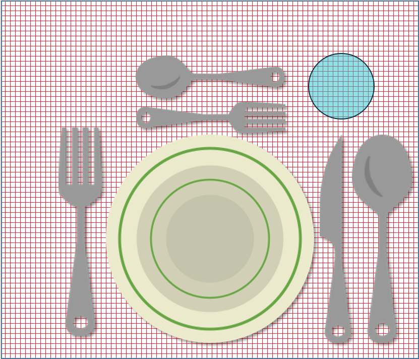
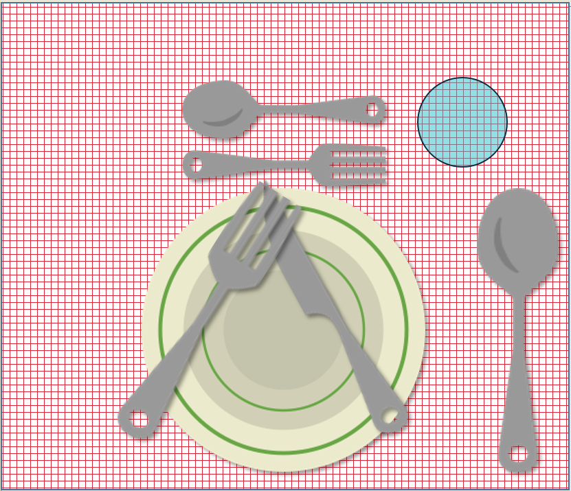
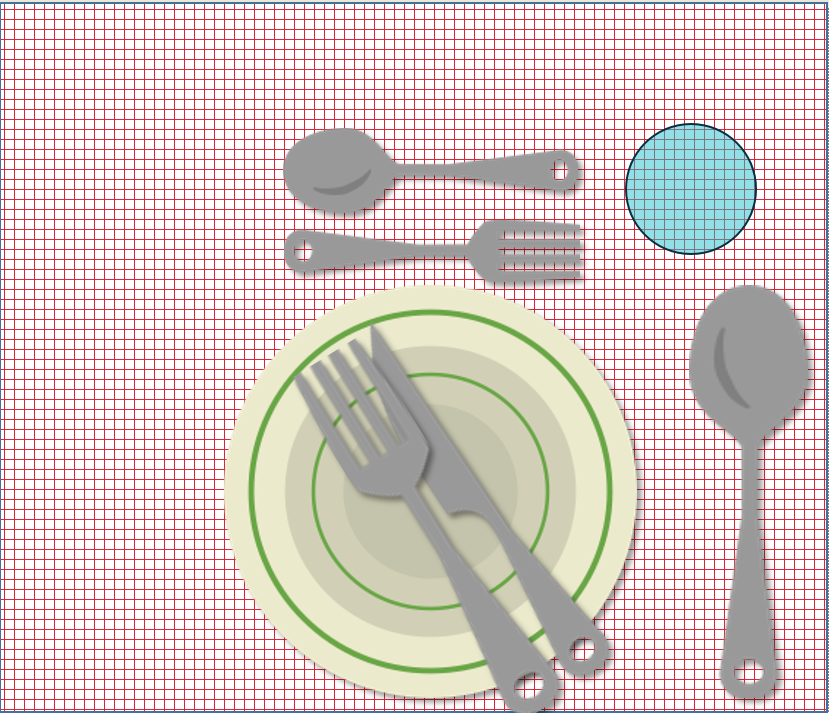

Az asztal megterítése
Az egyszerű terítés menete
Az abrosz felhelyezése
A só, a bors és esetleg a virág elhelyezése
A tányérok feltevése
Az evőeszközök felrakása
A poharak feltevése
A szalvéta felrakása
Lépések
A tányértól
balra a villák
jobbra a kések
a kések után a kanalak találhatók
a desszerthez használatos evőeszközök a tányér felett helyezkednek el
A poharat a kés hegye fölé helyezzük el

A szünet és a befejezés jelzése

